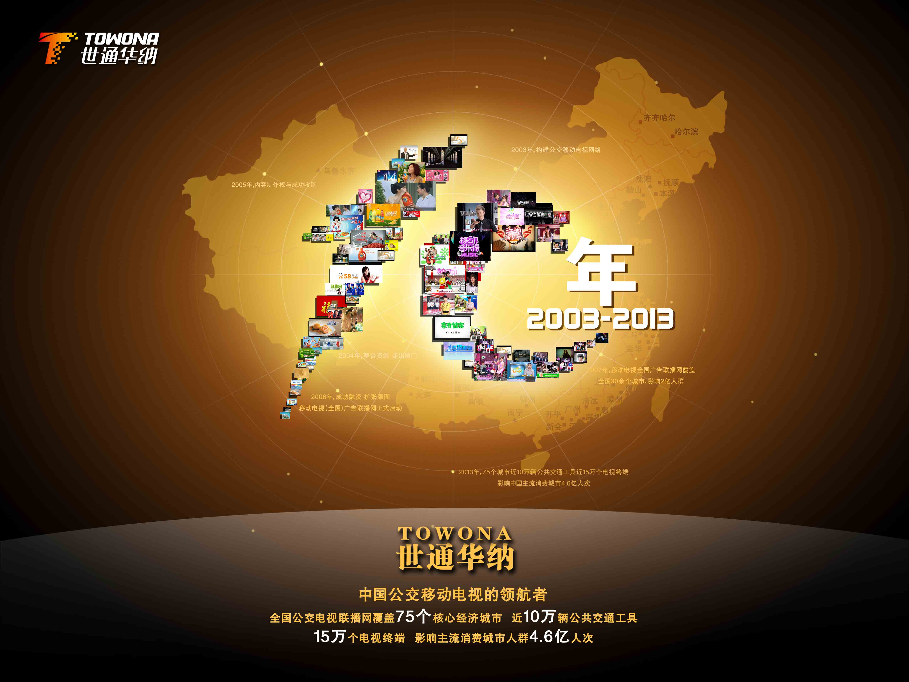
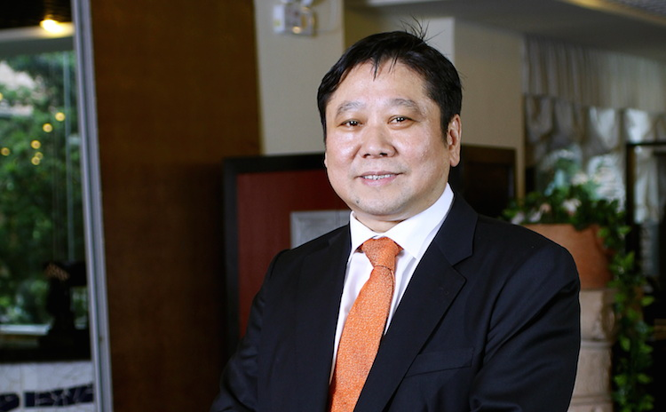
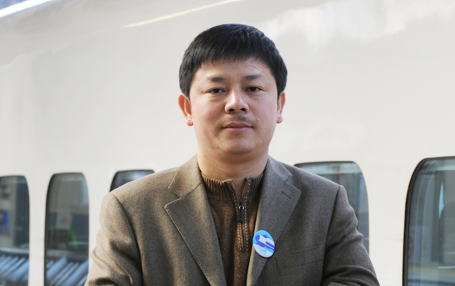
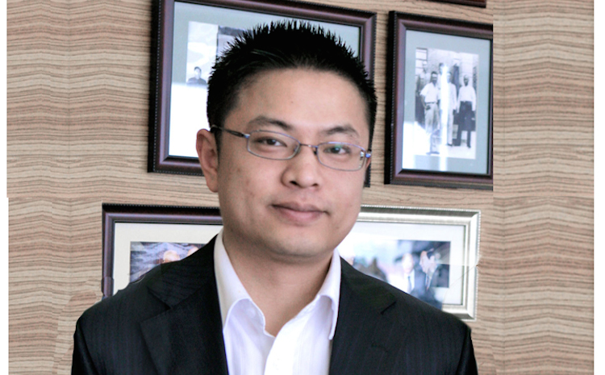
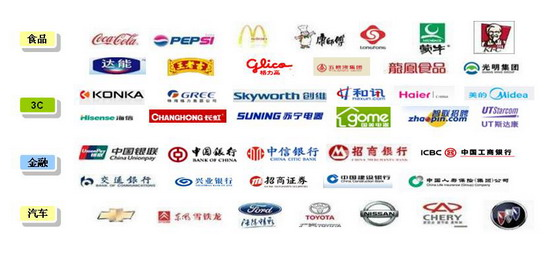
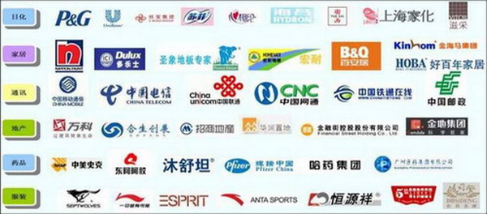

总览

世通华纳传媒控股有限公司（以下简称世通华纳）是目前中国最大的公交移动电视传媒集团，其运营模式主要是以公交车为载体,通过与各地广电部门、公交运营机构和其它公交移动电视代理机构的合作，构建中国城市的新型视听媒体--数字移动电视，从而大大延伸电视媒体在时间和空间上对受众的覆盖范围，拓展了电视媒体的社会及经济利益空间。 2003年1月，世通华纳在厦门正式成立。自2006年起，世通华纳得到了多家国际著名投资机构的注资。 2006年4月，世通华纳总部正式移师北京，下设营销中心、人力行政中心、财务中心、影视中心和资源管理中心等核心部门，成为业内少有的具有完整意义的传媒公司。2008年7月，世通华纳引入国际传媒专家、著名华人企业家张镇中先生出任集团董事长兼 CEO，推动企业实施更明确的发展战略，构建新型企业组织架构和运行模式。目前，世通华纳在全国拥有多家子公司和办事处。 世通华纳依托与全国广电系统的权威合作和全球领先的广播数字传输技术，打造了稳定、严谨、高效的节目和广告播出平台，将行业内广泛存在的黑屏、死机、音画不同步等技术故障严格控制在2%以内，实现了对全国主流城市的无缝隙全城覆盖和全程覆盖，从而最大限度避免了传播过程中的信息损耗；保证了受众行进途中的收视效果；保障了广告主对于传播收视率的极致追求。 世通华纳依托专业的影视人才与对移动电视节目的深刻理解，投入5000万专业影视设备，为市民量身定做了极具社会公益性的超短篇电视栏目，涉及家居、健康、汽车、运动、旅行、理财、消费、电影、音乐等与百姓生活息息相关的节目播出，使世通华纳被誉为最贴近城市市民的媒体。 世通华纳开创了“全效传播”的全新广告理论，依托移动电视媒体封闭性、垄断性、重复性、强迫性的收视特点；移动电视庞大的受众群体——有近75%的市民依赖公共交通；受众较长的无聊时间——平均达到近25分钟的乘车观看时间；较低千人成本——约传统电视的十分之一等移动电视优势，赢得了国际、国内外众多知名品牌企业的广泛认可。 时至今日，世通华纳携手中国各省市广电集团及公交集团，建立了紧密、长期、稳定的战略合作伙伴关系，不断完善中国移动电视广告发布的整体网络，其打造的移动电视全国广告联播网业已覆盖中国34主流城市及17个三四线城市，9万余辆公交车，13万余台电视收视终端 ，影响中国亿万城市居民，形成了规模庞大的移动电视网络。
成长历史
1999年，公司前身
1999年9月，世通华纳传媒控股有限公司的前身新世通科技有限公司在厦门成立，专门从事对车载多媒体播放及监控系统的研究、生产及开发工作。
2000年，关注公交事业
2000年，新世通科技有限公司集合众多高级技术人员花费二年多时间，成功开发出符合中国城市公交车辆管理及多媒体播放需求的“公交车载多媒体播放监控系统”，实现了播放及摄像(监控)一体化。该创新技术填补了此领域的空白，并于2003年被列入厦门市政府重点技术创新项目。
2003年，构建公交移动电视网络
2003年1月，厦门世通华纳文化传媒有限公司成立，开始寻求与国内重点城市公交运营商合作，构建公交移动电视网络； 2003年5月，率先与厦门市公交总公司合作，开始在600多部公交车辆上安装数字移动电视； 2003年6月，开始着手建立自己的移动电视品牌——“城市T频道”，建立演播室、录音棚，引进专业主持人和专业节目制作人员，通过大量市场调查分析受众需求，精心打造符合公交移动电视需要的节目； 2003年9月至12月，厦门“城市T频道”试运营并取得巨大成功。
2004年，整合资源 走出厦门
2004年1月，厦门“城市T频道”开始正式运营； 2004年至4月，除厦门外，分别与武汉、济南等城市公交总公司签署合作协议，开始安装设备，并与其他10个重点城市的公交运营商达成合作意向，开始深入谈判； 2004年4月，世通华纳武汉公司成立； 2004年6月，世通华纳济南公司成立。
2005年，内容制作权与成功收购
2005年2月，取得“增值电信业务经营许可证”； 2005年6月，取得“广播电视节目制作许可证”； 2005年12月，收购大连华讯传媒有限公司，世通华纳大连公司成立。
2006年，成功融资 扩张版图
2006年3月，董事会成功运作资本市场，取得美国国泰财富基金的巨额投资，迅速加快全国拓展的步伐； 2006年2月， 世通华纳沈阳公司成立； 2006年3月， 世通华纳南京公司成立； 2006年3月， 世通华纳青岛公司成立； 2006年4月， 世通华纳广州公司成立； 2006年5月， 世通华纳杭州公司成立； 2006年6月， 世通华纳深圳公司成立； 2006年7月， 世通华纳昆明公司成立； 2006年8月， 世通华纳合肥公司成立； 2006年10月，世通华纳西安公司成立； 2006年11月，世通华纳无锡公司成立； 2006年11月，世通华纳山西公司成立； 2006年11月，世通华纳烟台公司成立； 2006年11月，世通华纳兰州公司成立； 2006年11月，世通华纳石家庄公司成立； ……
2006年，集团总部移师北京
2006年4月，世通华纳移动电视传媒集团有限公司总部从福建省厦门市移师北京，并在全国广纳贤才，正式吹响了进军全国的号角。
2006年，创造风险投资记录
2006年10月，随着国泰财富基金、鼎晖创投、华登国际和成为基金的二轮注资，世通华纳创造了2006年国内传媒企业获得最大笔风险投资的纪录。
2006年，移动电视（全国）广告联播网正式启动
2006年12月8日，世通华纳移动电视传媒集团有限公司在北京天伦王朝饭店为其打造的移动电视（全国）广告联播网举行了隆重的启动仪式，来自广告界、新闻媒体和社会各行业的广大精英汇聚一堂，共同见证了这一历史时刻。此后，世通华纳移动电视传媒集团有限公司又分别在上海与厦门等主要城市为广告联播网举行了隆重的启动仪式。
2007年，移动电视全国广告联播网覆盖全国30余个城市，影响2亿人群
今天，世通华纳打造的移动电视全国广告联播网已覆盖全国30余个中心以及省会城市，拥有5万余辆公交车，8万台左右的电视收视终端，城市覆盖人群已达2亿人次。
2008年，构建全新集团管理团队
世通华纳引入国际传媒专家、著名华人企业家张镇中先生出任集团董事长兼 CEO，推动企业实施更明确的发展战略，构建新型企业组织架构和运行模式。目前，世通华纳在全国拥有多家子公司和办事处。
谱写新篇章
时至今日，世通华纳携手中国各省市广电集团及公交集团，建立了紧密、长期、稳定的战略合作伙伴关系，不断完善中国移动电视广告发布的整体网络，其打造的移动电视全国广告联播网业已覆盖中国34个主流城市及17个三四线城市，9万余辆公交车，13万余台电视收视终端，每天影响中国亿万城市居民，形成了规模庞大的移动电视网络。集团荣誉
文章来源：towona
发表时间：2013-08-01
中国传媒大会2012年会2013年1月在三亚举行。来自全国报纸、期刊、广播、电视、网络、广告等近300家媒体齐聚三亚，进行了中国媒体领域最前沿思想火花碰撞与交流。 此届传媒大会围绕“美丽传媒，转型创新”这一主题展开深入探讨和交流，总结2012年中国传媒发展状况，展望2013年中国传媒发展新趋势。在晚间举行的2012年度金长城传媒奖颁奖盛典上，世通华纳荣获中国最具影响力移动新媒体金长城传媒奖，张乐阳总裁代表世通华纳出席了本次大会。
文章来源：towona
发表时间：2013-08-01
世通华纳获中国百强户外媒体供应商十大骨干媒体荣誉称号，在2013年4月召开的第十届中国户外传播大会上，世通华纳再次凭借其优质的服务和强大的资源优势荣获这一称号。 大会主办方《亚洲户外》经过数月的调研与思考，以“新定位+新模式+新领域”作为本届年会集中探索、重点解决的核心议题，回应手机移动端对所有传统媒体的冲击和挑战，回答在城镇化和美丽中国的新进程中户外广告的新定位与新功能，同时系统梳理、总结过去十年来中国户外广告业所走过的方方面面，找准未来十年调整与提升的方向，夯实未来发展的基石。任小演高级副总裁代表世通华纳出席了本次大会。
文章来源：towona
发表时间：2011-09-12
“无品牌，不传播”，引人瞩目的第三届中国品牌与传播大会于2011年8月31日在北京万达索菲特酒店盛大举行。本次活动由北京大学新闻与传播学院、复旦大学新闻学院、中国人民大学新闻学院、中国传媒大学广告学院、武汉大学新闻与传播学院联合主办，世通华纳移动电视传媒集团特邀联办，天津渤海商品交易所协办，金色号角视频支持，传媒中国网承办了本次活动。在全球知名品牌与本土品牌交相辉映的“品牌之年”，在中国品牌与传播大会上来自海内外的企业领袖与传媒精英巅峰论道，共同探寻媒体融合之中发展新思路，谋求未来品牌传播的新方向。 在本届大会中，世通华纳凭借优异的市场表现，荣获“品牌贡献奖·2010—2011年度新媒体推荐品牌”，世通华纳董事长兼CEO张镇中教授荣获“品牌贡献奖·2010—2011年度品牌贡献人物”。
文章来源：towona
发表时间：2010-01-18
近日，在北京落下帷幕的“2009中国企业发言人与传媒价值年会暨颁奖盛典”上，世通华纳传媒集团凭借公交电视资源覆盖行业第一的规模优势和广泛获得4A公司和广告主认可的品值效应，连获两项大奖：世通华纳集团斩获了“2009年度中国最具企业投放价值新媒体”大奖；董事长兼CEO张镇中教授与湖南广播电影电视局局长党组书记欧阳常林、重庆广播电视集团（总台）总裁兼台长李晓枫、辽沈晚报社社长徐少达等共同荣膺“2009年度中国传媒价值贡献人物”。这是世通华纳继在2009年11月的中国国际广告节上荣获“新媒体领军品牌”之后的又一次获奖。 积极推进并购，资源行业称雄 为了满足广告主不断增长的广告投放需求，在集团整体业绩逆势攀升的支持下，世通华纳自2009年10月以来，积极推动公交电视行业内的资源整合，先后收购并垄断了广州市中心城区、哈尔滨的公交资源，并获得了成都市的独家广告代理权。同时，世通华纳继续寻找战略腹地，准备积极拿下天津，进军北京。这一系列战略举措极大的扩大了集团的行业份额。目前，世通华纳已覆盖中国35个主流城市，8万余辆公交车，约13万台电视收视终端。其中，在一线大城市，世通华纳掌控了大量优势资源，如广州、深圳；在20多个二三线城市（或区域中心城市），世通华纳进行了垄断覆盖，如青岛、哈尔滨、厦门、大连、武汉等。 业内分析人土认为，世通华纳的资源提升后，已打破了之前行业内构筑的公交电视资源均势，有利的天秤已向世通华纳倾斜，占据市场的份额已超过了60%。行业份额的领先，品牌效应的提升以及媒体价值的彰显，直接推动了世通华纳的收入上扬。集团09年一季度业绩同比增长近20%，大客户增长超过50%。二季度收入同比增长近80% ，环比增长60%，大客户同比增长高达190%。下半年的业绩表现更为优异，大客户收入增长持续强劲。此次的获奖无疑是对世通华纳推行专注与专业战略的最大鼓励和肯定。 据悉，2009中国企业发言人与传媒价值年会暨年度颁奖盛典是由人民网、清华大学国际传播研究中心和复旦大学国际公共关系研究中心共同主办。在本届大会中，中华全国新闻工作者协会党组书记翟惠生、中国电视艺术家协会名誉主席、中央电视台原台长杨伟光、人民网总裁何加正、中宣部副局长杨武军、清华大学新闻传播学院副院长崔保国教授等30多位政府领导、业内专家；梅赛德斯-奔驰（中国）公关部总监王燕、麦当劳（中国）公司事务及公共关系副总裁栾江红、中国国际航空公司市场部总经理、杜邦中国公共事务总监徐俊等近80位企业发言人、品牌总监或公关总监；陕西广播产业集团总经理刘卫星、南都周刊总编辑陈朝华、湖南电视台台长助理、广告部主任樊旭文、河南日报报业集团副总经理焦书晖等100多位知名媒体领导及传媒机构人士，共计300余人齐聚北京，共享盛会。世通华纳与之进行了深入的沟通与交流，媒体价值和品牌效应得到广泛认可。
文章来源：towona
发表时间：2009-11-06
近日，在广西南宁落下帷幕的“第十六届中国国际广告节”上，世通华纳传媒集团凭借专注于公交移动电视领域中的卓越表现和广泛获得广告主认可的专业能力连获两项大奖：世通华纳公司斩获了“中国新媒体领军品牌”大奖，董事长兼CEO张镇中教授荣膺“中国新媒体领军人物”。同时获得“中国新媒体领军品牌”大奖的还有航美传媒、凤凰网等知名新媒体。这是世通华纳继2009年中国品牌与传播大会荣获“影响中国新媒体贡献大奖”之后的又一次获奖。世通华纳全国市场总监陈渡风作为集团代表出席了颁奖典礼，并接受荣誉。 自2003年成立以来，世通华纳便一直专注于公交移动电视行业，积极调整资源布局，提供专业的广告服务。2008年年中，世通华纳集团引进国际传媒专家、新闻集团原全球高管张镇中先生出任董事长兼CEO，提出了全新的运营理念，业绩逆市大幅提升。公司09年一季度业绩同比增长近20%，大客户增长超过50%。二季度收入同比增长近80% ，环比增长60%，大客户同比增长高达190%。第三季度的业绩表现更为优异，大客户收入增长持续强劲。此次的获奖无疑是对世通华纳专注与专业的最大鼓励和最好回报。 在经济动荡中，新媒体市场发生着剧烈的变化，世通华纳也在积极调整和重塑资源覆盖。对于一系列扩张动作，集团秉承成本控制的布局理念，认为赢利并产生利润是退出或进入某个城市第一要素，而每一城市的布局都需要充分考量当地的广告市场、消费潜力以及公交资源。 在10月，世通华纳闪电拿下了国内特大城市——广州市中心城区的公交移动电视的垄断资源，同时将把扩张的触角延伸至北京、重庆、武汉等战略重点城市。目前，世通华纳已覆盖中国35个主流城市，8万余辆公交车，约13万台电视收视终端，影响3.5亿人口。 第十六届中国国际广告节由中国广告协会、国际广告协会中国分会和南宁市人民政府共同主办，是中国最具权威、最专业、规模最大、影响最广的广告界盛会，致力于推动中国广告业发展，促进国内、国际广告业交流与合作。 中国国际广告节始办于1982年，原为“全国优秀广告作品展”活动，首届举办城市为北京。此后，先后在中国11个城市举办。随着嘎纳国际广告节、纽约广告节、伦敦广告节、亚太广告节、日本电通赏、ONE SHOW等国际顶极广告赛事的优秀作品展进驻中国国际广告节，国际知名企业领袖、传媒风云人物、广告大师的身影也频繁出现在广告节的嘉宾和演讲嘉宾中，跨国广告集团也越来越重视以参赛、参展、参会等形式参与中国国际广告节。中国国际广告节的专业化、综合性与代表性，使其成为国际广告业考察中国市场最便捷的通道，成为众多国际广告节及广告赛事最佳推广、展示平台。
文章来源：towona
发表时间：2009-07-12
在被誉为中国品牌与传播界“奥斯卡”的2009中国品牌与传播大会暨“品牌贡献奖”年度颁奖盛典上，作为中国领先的移动电视集团——世通华纳凭借优异的业绩表现、高性价比的全国广告联播网以及首推移动电视交易货币等一系列推动集团和新媒体行业良性发展的举措，荣获了“品牌贡献奖·影响中国新媒体贡献大奖”；董事长兼CEO 张镇中先生荣膺“品牌贡献奖·影响中国十大传媒贡献人物”。 2009年6月27日在北京万豪酒店盛大开幕的中国品牌与传播大会是由中国广告主协会、中小企业全国理事会、中国人民大学新闻学院、复旦大学新闻学院、北京大学新闻与传播学院、武汉大学新闻与传播学院联合主办的一项极具影响力的业内活动。 九届全国政协副主席王文元、中华全国工商业联合会副主席孙晓华、中国广告主协会执行会长段瑞春等出席大会并颁奖。会上，围绕“品牌显示力量、媒体传播信心”的主题，中国传媒界领军人物与企业界领军人物进行了巅峰对话。同时颁出了品牌传播领域大奖，世通华纳董事长兼CEO张镇中与凤凰卫视董事局主席刘长乐、湖南广播电视局党组书记局长兼湖南电视台台长欧阳长林等共同荣获“品牌贡献奖·影响中国十大传媒贡献人物”。 世通华纳自2003年成立以来，专注于公交移动电视领域的精耕细作，通过多年经营已演化为一家集团性公司。时至今日，世通华纳携手中国各省市广电集团及公交集团，建立了紧密、长期、稳定的战略合作伙伴关系，不断完善中国移动电视广告发布的整体网络，其打造的移动电视全国广告联播网业已覆盖中国35个主流城市，每天影响中国亿万城市居民。 自2008年中世通华纳引进国际传媒专家张镇中出任公司董事长兼CEO以来，通过调整发展战略、梳理媒体资源布局、优化经营团队，进一步提升了销售业绩，取得了良好的收效。08年业绩较之前一年实现100%的增长，客户数量稳居行业之首。同时世通华纳在新媒体行业内首推移动电视收视评估标准和媒介投放优化工具——BCA地面覆盖管家，有力的保障了广告主对精准营销的极致追求；而力推的大客户发展战略，已成为业绩增长的新引擎。世通华纳凭借优质高效的广告投放平台达成了与宝洁、联合利华、欧莱雅、可口可乐、中国工商银行、招商银行等大批著名品牌的战略合作。 张镇中先生系国际传媒届颇具影响力的华人企业家，曾任新闻集团全球董事会执行董事，星空传媒 (Star TV) 董事长兼总裁，并兼任清华大学、中国传媒大学、航空航天大学教授，他既是国际著名的媒体专家也是知名的企业家，早年担任过美国麦道公司亚太区董事长兼 CEO，并是美国苹果 (Apple) 公司、Palm、Neu Star 的独立董事和NIKE顾问，具有丰富的企业管理经验。他还是媒体新技术应用的推动者，是全球电视卫星直播的首倡者。
文章来源：新浪网
发表时间：2009-06-01
由《当代经理人》杂志社和中国创业研究中心联合主办的 “第八届创业中国高峰论坛暨2009年度中国十大创业领袖、创业新锐、行业隐形冠军颁奖盛典”于5月30日在北京隆重召开。凭借在户外视频行业中的卓越表现和长期专注于公交移动电视领域的精耕细作，世通华纳斩获了“2009中国十大行业隐形冠军”的光荣称号。世通华纳全国市场总监陈渡风作为集团代表出席了颁奖典礼，并接受殊荣。 所谓“隐形冠军”，德国著名经济学家赫尔曼西蒙教授给出了经典解释。在激烈的市场竞争中，在充满喧嚣的时代，在大众财经明星的话语世界，还有一支“隐形部队”在默默地耕耘。这些企业专注于自己的行业；他们业绩赫赫，高度专注于某一个领域，某方面能力遥遥领先于同行，且成为推动企业发展的核心源动力。 自2003年成立以来，世通华纳便一直专注于公交移动电视行业，持之以恒、滴水石穿，逐渐成长为覆盖中国35个主流城市，8万余辆公交车，约13万台电视收视终端的中国最大移动电视集团。此次的获奖无疑是对世通华纳执著、专注于公交移动电视的最大鼓励和最好回报。 面对新媒体的洗牌变局，一些移动视频媒体不断延伸着圈地的范围，从公交领域向地铁、机场、卖场等渠道挺进，进行多元化发展。但世通华纳不盲目扩张，强调坚守，专注于公交移动电视领域的精耕细作，拥有23个区域中心城市的公交移动电视独家运营权以及10余个城市的公交电视的代理权；同时在新媒体行业率先主推行业收视标准、强调内容原创性以及打造一站式专业服务。这让世通华纳在新媒体变局中更好的把握了机遇，赢得受众、市场和客户。 据悉，在本届颁奖典礼中，国家有关领导和部委负责人、著名企业领袖与专家、跨国公司驻华CEO、海内外知名券商、创业榜样型企业，以及众多国内外媒体等300人参加了此次盛典。正如主办方对于“隐形冠军”这一奖项的定义，与会代表纷纷表示，以世通华纳为代表的这些行业卓越企业所表现出来的执着、稳健、坚忍不拔的精神，恰恰是浮躁而喧嚣的时代所匮乏和急需的精神，也是中国企业应对此次经济危机的一项秘宝。而这种精神也正在中国的商业职场中生根发芽，开花结果。
文章来源：towona
发表时间：2011-05-08
在刚刚落幕的第六届中国户外广告大会中，大会权威发布了中国百强户外媒体供应商榜单。作为中国公交移动电视的领航者，世通华纳凭借优异的市场表现、超高性价比的全国广告联播网络以及首推新媒体交易货币等一系列推动集团和行业良性发展的举措，荣获“2009-2010年度中国百强户外媒体供应商全国性骨干企业”大奖。世通华纳全国市场总监陈渡风作为集团代表出席了此次大会，并接受殊荣。中国广告主协会执行会长段瑞春为世通华纳颁奖。 据悉，中国户外广告大会由《亚洲户外》精心策划和筹备，以“整合2009——户外传播e时代”为主题，在各地户外广告业同仁及苏州市地方政府部门的大力支持下，已于2009年4月28-29日在苏州会议中心隆重举行。“中国百强户外媒体供应商”榜单每二年权威核审一次。受到行业同仁、代理公司和广告客户的热情响应和充分肯定，是广告主选择合作伙伴、编列户外广告的重要参考和投放指南。 世通华纳自2003年成立以来，专注于公交移动电视领域发展，通过多年的经营，现已从一个地方性的公司演化为一家集团性公司，目前拥有24个区域中心城市的公交移动电视独家运营权，并拥有10余个城市的公交电视的代理权，形成遍布全国30余个城市的公交移动电视运营网络。 2008年中，世通华纳引进国际传媒专家张镇中出任公司董事长兼CEO，适时调整发展战略、梳理媒体资源布局、优化经营团队、提升销售业绩，取得了良好的收效。08年业绩较之前一年实现100%的增长，客户数量稳居行业之首。同时集团的媒体资源稳固，成本得到有效控制和降低，公司运行情况良好，优质高效的媒体平台正在吸引越来越多的客户进行广告投放，多家企业与我方签订了战略合作。
文章来源：赛迪网
发表时间：2008-03-25
“2008中国通信市场年会” (CCM 2008)于2008年3月12日在京隆重召开。会上，交通数字媒体翘楚 -- 世通华纳移动电视传媒集团有限公司凭借2007年新兴技术的融合应用和新兴市场的出色表现获得中国交通数字媒体市场的“年度成功品牌奖”和“2007中国交通数字媒体车载电视年度创新企业”两项大奖。中国通信市场年会为一年一度，媒体获奖尚属首次，世通华纳成为此次年会上的一大亮点。 与会专家指出：随着移动、无线、宽带、多媒体等多种通信技术的融合发展使行业应用市场不断完善，而这种技术和市场的不断发展促使以数字内容为核心的交通数字媒体得到了前所未有的发展机遇。站在“融合通信与产品创新”的角度，世通华纳作为交通数字媒体的代表企业被年会授予“2007中国交通数字媒体车载电视年度创新企业”可谓实质名归。 自2003年厦门起步以来，截止到2008年一季度，世通华纳已经在全国设立27个子公司、10家办事处，其打造的移动电视（全国）广告联播网已经覆盖国内30余个大型城市，5.5万余辆公交车、9.5万块左右的屏幕终端，车辆覆盖线路大多为当地优势资源，城市日收视覆盖人群已经突破2亿人次。在短短四年多的时间里，世通华纳就实现了安隅一方到联播中国的华丽变身。在这四年里，世通华纳不仅得到多家国际顶级风险投资的垂青融资总额近亿美元，而且在不断的扩张与整合中不断提升自身的综合竞争力和品牌影响力。在其运营的当地，世通华纳逐渐成为当地客户投放的主流媒体，越来越多地得到国内外品牌型客户的认可。目前，世通华纳发展并形成了超过3000家广告客户的广泛客户群体，包括一些中国和国际一流公司，市场支撑力明显。中国银联、中国银行、建设银行、工商银行、海尔、海信、创维、戴尔、五粮液、肯德基、麦当劳、可口可乐、蒙牛、伊利、统一、联合利华、强生、上海家化、国美、苏宁等国内外知名客户争相投放。在通讯行业，中国移动、中国电信、中国联通、中国网通、四方通信、普天通信、华数网通宽带、诺基亚、三星、摩托罗拉、索尼爱立信等知名品牌在世通华纳移动电视平台也均有投放。世通华纳在此次年会上获得“年度成功品牌奖”也正体现了通信产业对于交通数字媒体这一新兴媒体传播效果的认可。 在三网融合、融合通信的大背景下，媒体和电信的融合也在不断加强。会上，世通华纳的高层也表示，世通华纳愿意和广大通信技术厂商紧密合作，一起推动传媒产业的发展。同时，世通华纳目前也正在探讨与电信厂商合作实现移动电视交互式传播的可能性。 “2008中国通信市场年会”(CCM 2008)由信息产业部和中国电子信息产业发展研究院指导，赛迪顾问股份有限公司主办。来自部委领导、电信运营商、通信设备提供商、内容提供商、增值集成商等产业各方近500余人，围绕“标准发展与技术演进”、“业务应用与服务转型”、“融合通信与产品创新”三大主题，共同探讨在技术变革和业务升级背景下通信市场新兴的蓝海，深入解析通信领域标准（技术）演进趋势，掘金产业融合开创的蓝海。
文章来源：人民网
发表时间：2008-01-23
2008年1月17日，首届中国传媒领军人物年会暨第三届中国传媒创新年会在北京隆重开幕。本届年会主题是“创新成就传媒，人物引领创新”。年会由新闻出版总署主管的《传媒》杂志社主办，北京大学新闻与传播学院、清华大学新闻与传播学院联办。 会上，2007年度传媒创新领军人物及创新传媒系列奖项名单出炉。其中，世通华纳移动电视传媒集团一举斩获两项殊荣：世通华纳总裁/CEO鄢礼华被评为“2007年度十大新媒体创新领军人物”，而世通华纳移动传媒集团也凭借移动数字电视的独特媒体价值荣登“2007年度最具投资潜力媒体”榜单。
管理团队

姚贻德
曾担任加拿大政府商务部部长顾问，在IBM及美国Proctor & Gamble（宝洁）任职。其后，姚贻德先生拓展业务到香港，专营通讯设备、电线电缆、电力电缆等制造设备工业系列，并参与菲律宾和中国的基建项目和多项大型基本建设工程等。自2000年以后，姚贻德先生开始参与中国及国际多个矿业项目。曾任江西政协委员，杰出华商会协会副会长，并捐献两座在江西省的希望小学，美国密根州立大学电机工程系学士，加拿大西安大略大学获工商管理硕士

Allan Chan
2008年任世通华纳董事，负责公司战略及对外事务，曾担任霸菱亚洲投资基金执行董事，在该公司大中华区投资项目的结构制定及执行中起到了重大的作用，曾就职于私募基金Jacobson Partners（总部纽约），专注于服务和制造业的杠杆收购；曾在纽约就职于美林投资银行收购合并业务部；拥有宾夕法尼亚大学沃顿商学院的工商管理硕士学位，专攻财务及全球企业策略研究；拥有耶鲁大学经济学专业学士学位（荣誉生）

张乐阳
2003年加入TOWONA 从1997年到2003年担任《闽西日报》厦门分支机构的主管；从1992年至1997年担任编辑记者，从1988年至1992年担任福建漳平市委宣传部新闻秘书，从1983年到1987年就读于龙岩师范学院，荣获教师资格
陈春伟
2013年加入TOWONA 之前于安达信及普华永道计师事务所（北京）任高级经理 上海财经大学会计本科 中国注册会计师(CPA)

樊科
2007年加入TOWONA 2001年至2003年就职于《潇湘晨报》，之后在上海《青年报》的销售及管理部门担任重要职位。 管理学学士，毕业于武汉商学院。
我们的客户


联系我们
全国免费客服电话：800-9900-900
网址：www.towona.com
email：info@towona.com.cn
电话：86－10－59270000
传真：86－10－59270010
中国运营总部：北京市朝阳区八里庄西里99号住邦2000商务中心2号楼23层
邮编：100025
北京全国各地子公司
地址：北京市朝阳区八里庄西里99号 住邦2000商务中心 2号楼23层 （100025）
电话：010-59270000
传真：010-59270010 厦门
地址：福建省厦门市思明区湖滨北路10号楼(新港广场)十层C单元 （361012）
电话：0592-5395933
传真：0592-5368309 大连
地址：大连市沙河口区东北路99号亿达广场501室 （116021）
电话：0411-84547188
传真：0411-84547088 昆明
地址：云南省昆明市官渡区珥季路银海樱花语春天里13-805室 （650021）
电话：0871-67238235
传真：0871-67238235 武汉
地址：武汉市江汉区新华路385号南达大楼18层1810室 （430015）
电话：027－59500579
传真：027－59500579 南京
地址：江苏省南京市白下区洪武路137号19层C座 （210002）
电话：025-66671666
传真：025-66670966 上海
地址：上海长宁区定西路759号上海映巷3号楼4楼 （200052）
电话：021-61248677
传真：021-61248699 合肥
地址：安徽省合肥市金寨路162号安徽国际商务中心B座16层（230011）
电话：0551-3650000
传真：0551-3615700 深圳
地址：深圳市福田区车公庙深南大道6017号都市阳光名苑1栋11D （518040）
电话：0755-33017918
传真：0755-3317918-8008 杭州
地址：杭州市凤起路68号东园大楼A幢1006（310003）
电话：0571-85287602
传真：0571-85287601 广州
地址：广州市越秀区中山一路57号南方铁道大厦2001-2003室 （510600）
电话：020-28822000
传真：020-22380001 烟台
地址：烟台市芝罘区南大街9号金都大厦8层 （264000）
电话：0535-2110999
传真：0535-2110166 青岛
地址：青岛市市南区银川西路67-69号青岛国际动漫游戏产业园B座201室 （266071）
电话：0532-80907655
传真：0532-80907633 兰州
地址：兰州市天水北路1114号交通治安分局家属院（嘉润苑）1号楼2单元2901室 （730000）
西安
地址：西安市莲湖区丰禾路丰禾小区34号楼2单元201室 （710014）
石家庄
地址：河北省石家庄市新华区联盟东路柏林怡园8-1-2401室 （050060）
温州
地址：浙江省温州市鹿城区金桥路吕浦花苑办公楼二楼 （325027）
电话：0577-86073119
传真：0577-86073133 苏州
地址：苏州市姑苏区南园北路25号玉兰新村23幢101室 （215006）